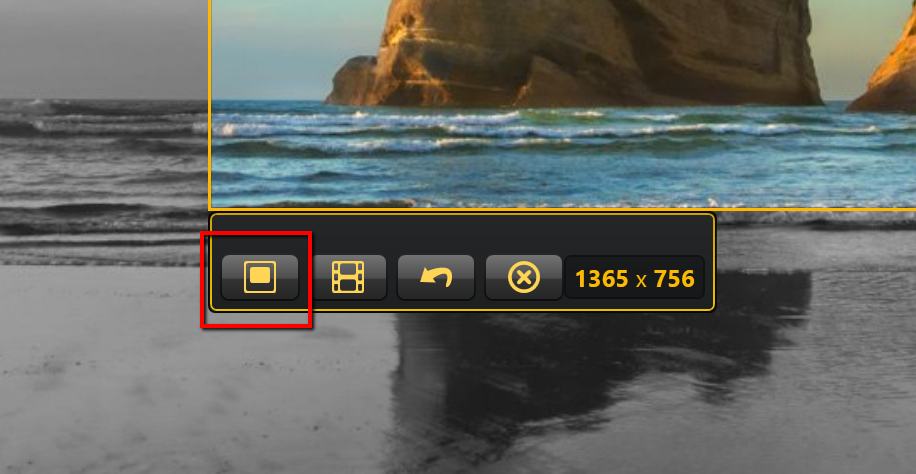

How to take a image capture
After triggering screen capture, crosshairs will appear on your screen. You use these crosshairs to select the area of the screen you want to capture in an image. To do so:
- Click and drag your cursor until the area you want to capture selected inside the colored box.

- Release the cursor to capture the area. A new window will appear showing you the image you have just captured. Selecting an area as done in step 1 will give you the image below.
- If you are satisfied with the image, click the Image Capture icon in the tool bar, indicated in the red box.
- If you are dissatisfied with the image, click the Redo Selection icon in the tool bar, indicated in the blue box. 